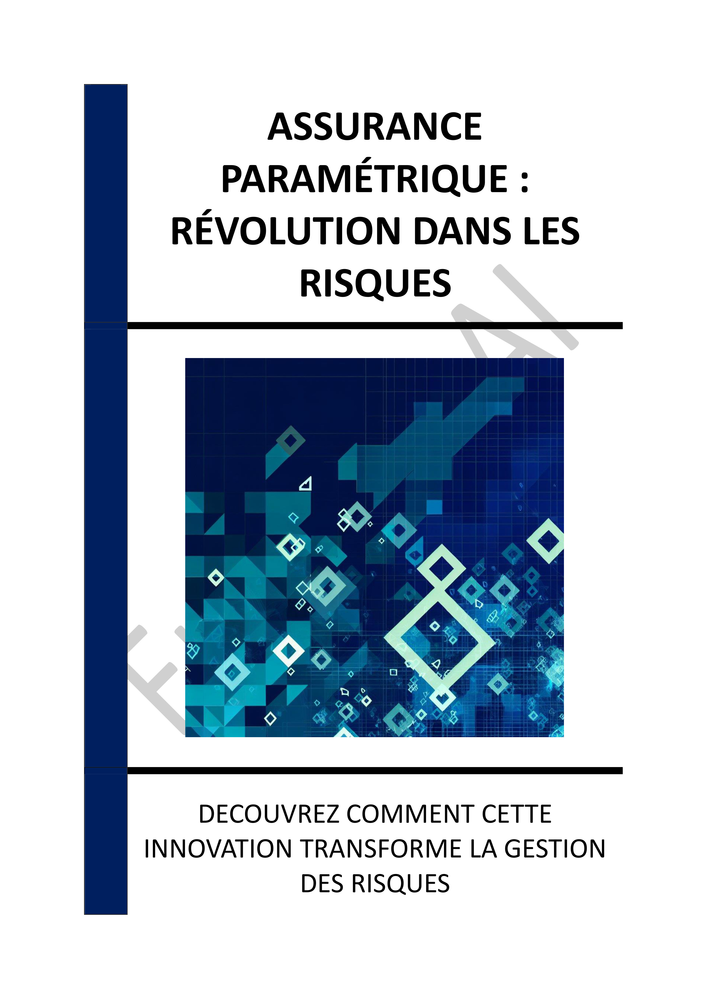

▶
Vitesse
++
+
=
-
--
INTRODUCTION - L'ESSOR DE L'ASSURANCE PARAMÉTRIQUE : UNE RÉVOLUTION DANS LA GESTION DES RISQUES
Chapitre 1 - INTRODUCTION À L'ASSURANCE PARAMÉTRIQUE
1.1 - Origines et contexte de l'assurance paramétrique
1.2 - Définition et principes fondamentaux
1.3 - Différences avec l'assurance traditionnelle
Chapitre 2 - FONCTIONNEMENT DE L'ASSURANCE PARAMÉTRIQUE
2.1 - Les indices paramétriques
2.2 - Processus de déclenchement des indemnisations
2.3 - Exemples de contrats paramétriques
Chapitre 3 - AVANTAGES PAR RAPPORT À L'ASSURANCE TRADITIONNELLE
3.1 - Rapidité des indemnisations
3.2 - Transparence et prévisibilité
3.3 - Réduction des litiges
Chapitre 4 - APPLICATIONS SECTORIELLES DE L'ASSURANCE PARAMÉTRIQUE
4.1 - Agriculture et gestion des récoltes
4.2 - Énergie et production renouvelable
4.3 - Tourisme et événements climatiques
Chapitre 5 - DÉFIS ET LIMITES DE L'ASSURANCE PARAMÉTRIQUE
5.1 - Le risque de base (basis risk)
5.2 - Sélection des indices pertinents
5.3 - Complémentarité avec les assurances traditionnelles
Chapitre 6 - INTÉGRATION DE L'ASSURANCE PARAMÉTRIQUE DANS LA GESTION DES RISQUES
6.1 - Analyse des risques et identification des besoins
6.2 - Négociation et conception des contrats
6.3 - Formation et sensibilisation des équipes
Chapitre 7 - RÔLE DE LA TECHNOLOGIE DANS L'ASSURANCE PARAMÉTRIQUE
7.1 - Capteurs et collecte de données
7.2 - Traitement des données massives (big data)
7.3 - Blockchain et automatisation
Chapitre 8 - ÉTUDES DE CAS ET EXEMPLES CONCRETS
8.1 - Coopératives agricoles en Afrique
8.2 - Producteurs d'énergie renouvelable en Europe
8.3 - Opérateurs touristiques et garanties climatiques
CONCLUSION - VERS UNE GESTION DES RISQUES PLUS RÉSILIENTE ET INNOVANTE
📄 Consulter les annexes du livre
Mentions légales